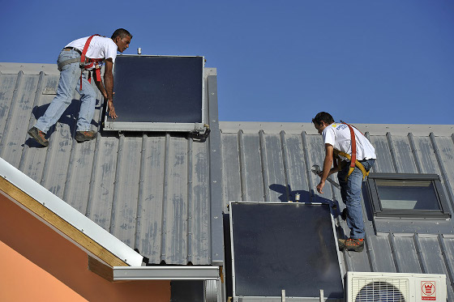

Mon chauffe eau solaire
Le soleil est gratuit
Située dans l'océan entre capricorne et cancer, la Réunion bénéficie d'un ensoleillement exceptionnel. Le littoral est le plus ensoleillé avec des moyennes de plus de 2500 heures de soleil par an ce qui ne se voit que dans le sud de l'Europe. Grâce à cet atout exceptionnel, la Réunion est pressentie comme un territoire qui pourrait devenir autosuffisant en électricité grâce à l'énergie solaire.
Comme le rappelle le site de la ville de Saint-Paul, l'idée d'autosuffisance a été lancé par le président du Conseil Régional Paul Vergès en 1999. Le soleil n'est pas le seul volet de cette autosuffisance de la Réunion mais il en est l'élément principal, il peut chauffer l'eau et aussi générer de l'électricité photovoltaïque avec un rendement que beaucoup de métropolitains peuvent envier.
Malgré cela, de nombreux de réunionnais ont parfois du mal à régler leurs factures d'électricité. Comme partout ailleurs, l'augmentation du coût des matières premières comme le charbon et le pétrole touche avant tout les plus pauvres. La loi Besson du 31 mai 1990 définie la précarité énergétique comme suit : « est en situation de précarité énergétique toute personne qui éprouve dans son logement des difficultés particulières à disposer de la fourniture d’énergie nécessaire à la satisfaction de ses besoins élémentaires en raison de l’inadaptation de ses ressources ou de ses conditions d’habitat ». Nombre d'habitants de l'ile sont en précarité énergétique.

Face à cette précarité énergétique, les pouvoirs publics et EDF dans une certaine mesure, aident les ménages les plus pauvres à faire des économies d'énergie. Ce peut être en leur proposant des ampoules ou des appareils moins gourmands ou en les aidant à faire des travaux pour isoler leur maison. Le chauffage de l'eau peut compter jusqu'à 15% de la facture énergétique d'un ménage. Il n'est pas idiot, dans un pays à fort ensoleillement comme la Réunion, de proposer l'installation d'un chauffe-eau solaire.
Mon chauffe-eau est solaire
Une étude EDF datant de 2009 chiffrait le taux d'équipement en chauffe-eau solaire à 46% des maisons dans les Hauts de la Réunion. Mais cet équipement couteux, bien que source d'économies par la suite n'était pas envisagés par beaucoup de ménages. Pour réduire la dépendance énergétique de la Réunion, il a fallut passer à la vitesse supérieure et subventionner les équipements solaires les plus évidents comme les chauffe-eau.
C'est en 2009 que les primes pour l'installation de chauffe-eau solaires ont commencées à stimuler la demande. Le village du Plate sur la commune de Saint-Leu a été le premier à bénéficier de ces primes de 500 € dispensées par l'agence régionale de l’énergie. Les premiers bénéficiaires sont Mme et M. Trules qui ont reçu leur chèque le 5 mai 2009 selon le site de l'agence.
« Le soleil est une énergie gratuite et abondante à La Réunion, il faudrait être fou pour s’en priver pour chauffer son eau ».
Aujourd'hui ce sont les primes nationales comme la prime de rénovation énergétique qui a pris le relais de l'agence ARER mais la dynamique perdure. Depuis 2010, tout chauffe-eau dans un logement neuf doit être un chauffe-eau solaire. En 2014, le taux d'équipement en chauffe eau solaires atteind les 60% et l'agence régionale de l’énergie de la Réunion a lancé en mars une campagne globale avec affichages et spot TV pour convaincre les 40% de ménages restant. La campagne est accompagné d'un site web local : monchauffeeausolaire.re (qui n'est pas resté en ligne une fois la campagne terminée).
Ce dernier site recommande de ne s'équiper qu'auprès d'un professionnel qui bénéficie de l’appellation RGE QUALISOL. Les labels RGE (pour Reconnu Garant de l'Environnement mais certains disent Reconnu Grenelle de l'Environnement) indique quelles entreprises ont la compétence pour mettre en place une installation qui permettra de faire réellement des économies d'énergie.
Pour les entreprises, le cahier des charges est assez succin et met l'accent sur la formation des professionnels, comme pour une démarche Qalibat. Ce label est national, il est suffisant pour éloigner les amateurs qui voudrait arnaquer des particuliers mais ne donne pas d’exigence de construction pour assurer une résistance aux cyclones par exemple.
Avec mon chauffe eau solaire (relégué sur le site d'EDF), le particulier a néanmoins tous les éléments de base en main pour évaluer ses besoins et chiffrer sa dépense tout comme les économies qu'il va faire. Un site qui explique de A à z le chauffe eau électrique avant de vous envoyer choisir un installateur labellisé sur le site du RGE.
Quand Témoignages fait le point sur l'indépendance énergétique de l'île. Le passage au chauffe-eau solaire est le plus remarquable et le journal titre en 2013 La Réunion, l’île aux 120.000 chauffe-eau solaire. Un an plus tard, ils sont encore plus nombreux.